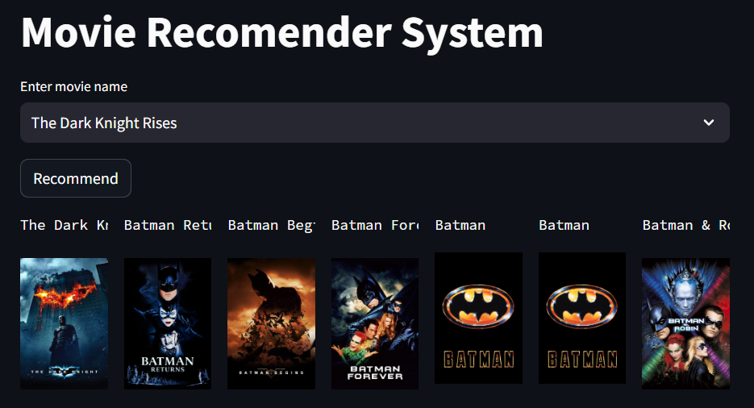
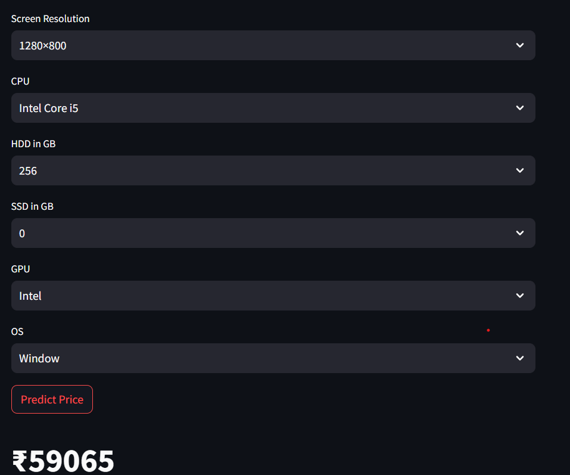
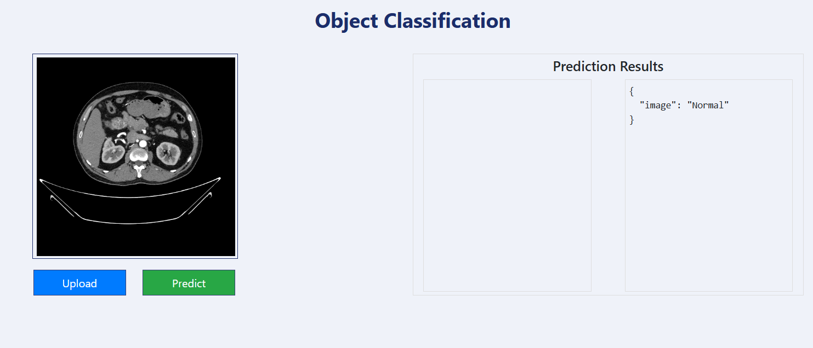
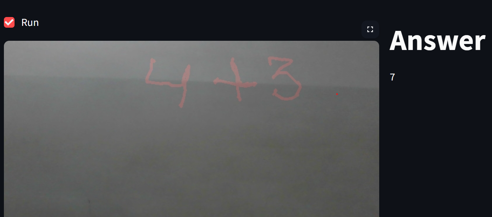
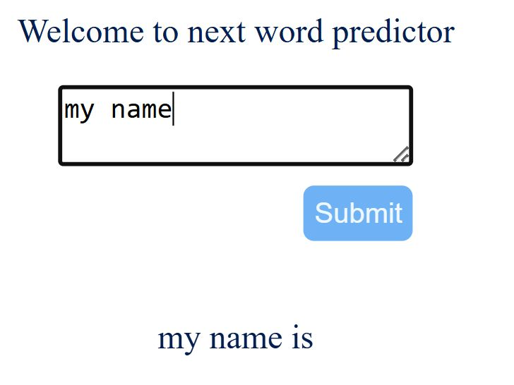
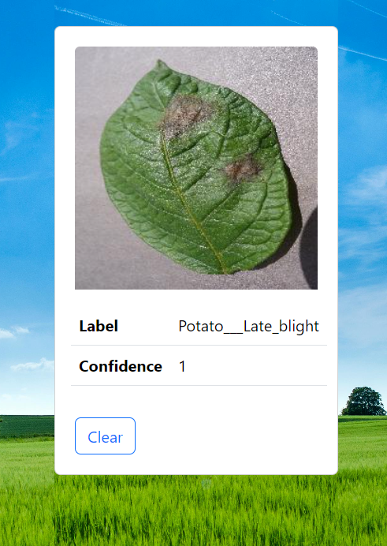

The Movie Recommender System is an AI-powered project that suggests movies based on user preferences. It leverages collaborative filtering and content-based filtering techniques to provide personalized recommendations.

The Laptop Price Predictor is a machine learning model that estimates laptop prices based on various specifications like processor, RAM, storage, brand, display size, and GPU. It helps users make informed decisions while buying a laptop.

The Kidney Tumor Classifier is an AI-powered deep learning model that detects and classifies kidney tumors using medical images. It helps doctors in early diagnosis and treatment planning.

The Math by Hand Gesture project uses computer vision and deep learning to recognize hand-drawn numbers and perform mathematical operations. It allows users to write numbers in the air using hand gestures and get real-time calculations.The system employs OpenCV for hand tracking . It provides an interactive and intuitive way to perform arithmetic operations without physical input devices.

Developed a language model that predicts the next word based on user input using Natural Language Processing (NLP) techniques. The model is trained on a large text corpus and utilizes deep learning architectures (LSTMs) for accurate predictions. It enhances typing efficiency and can be integrated into text editors, chat applications, and virtual assistants.

Developed a machine learning model to classify potato leaf diseases using image recognition techniques. The model leverages a Convolutional Neural Network (CNN) trained on a dataset of diseased and healthy potato leaf images.The classifier aids farmers and agricultural experts in identifying diseases early, improving crop health management.